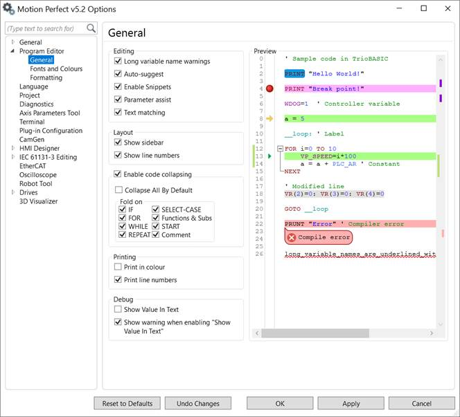

This page specifies the options for automatic assistance whilst editing:
Long variable names warning – if checked the user is warned if a variable name is longer than the unique name size supported by the controller.
Variable names can be longer than the unique name size but the controller only checks the first "unique name size" characters for uniqueness.
Auto-suggest – If checked the user is presented with a list of possible words as a keyword (or variable name) is being typed in.
Enable snippets – If checked the user can use predefined code snippets.
Parameter assist – If checked, when the user types a command which has parameters in brackets, a template is displayed to remind the user of the parameters.
Text Matching – If checked any text matching the current selection is highlighted.
Show Sidebar – If checked a sidebar containing symbols for breakpoints and the current line is displayed.
Show line numbers – If checked program line numbers are displayed.
Enable code collapsing – If checked the user can collapse (hide) sections of code to aid in programming.
Print in Colour - If this is checked then the printout is coloured using the same syntax highlighting colouring scheme as the editor screen display. Otherwise the printout is done in monochrome.
Print line numbers – If checked the printout also contains line numbers.
Show Value In Text – If this is checked then during program debugging the user can see variable values in program editor.
Show warning when enabling “Show Value In Text” - If checked the user will be notified that this could slow communications.